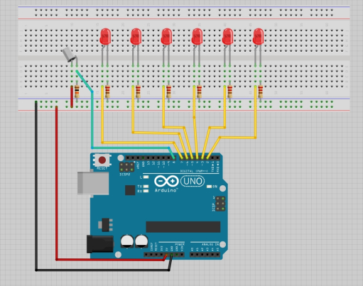

Reloj de arena digital
Al igual que baja la arena de un reloj de arena, los leds se irán apagando hasta que se acabe el tiempo. Claro que se podrá volver a resetear el cronómetro con un botón.
Se utilizan las siguientes funciones y características de Arduino:
- digitalRead(PIN_LED)
- digitalWrite(PIN_LED)
- Condicionales
Circuito
Para este proyecto necesitareis:
- 4-6 LEDs
- Un botón
- Cables
- Una resistencia de 10 kilo-ohmnios (Marrón-Blanco-Naranja)
- Tantas resistencias de 220 ohmnios como LEDs (Rojo-Rojo-Marrón)
Para comenzar conecta las filas de los lados de la placa de prototipado al positivo y al negativo de la placa (5V al positivo y GND al negativo. Las filas estas son las de al lado de líneas rojas y azules con un + y un - encima)
Una pata del botón se conecta a el positivo y la otra al negativo pero con la resistencia de 10 kilo-ohmnios. Justo encima de la resistencia, conectamos también al botón un cable que lo lleve al pin 8 del Arduino.
Pon los LEDs en fila tal y como se muestra en la imagen, con mucha atención de ponerlos en la orientación correcta para evitar fundirlos si se conectan al reves. La pata más larga de cada led se conecta con un cable a un pin del Arduino, empezando desde el 2. La otra pata se conecta al negativo con una resistencia de 220 ohmnios. Sin ella, también fundiríamos el LED.
¡Ya has montado todo el circuito! Ahora toca programar.
Programación
El programa que vas a escribir requiere expresiones if, que es inglés para si sin una tilde. Funciona así:
if (CONDICIÓN) {
HACER ESTO
}3 < 5 el programa entre llaves siempre se ejecutará, pues 3 siempre es menor a 5. Si quisieses ver si una variable valor es mayor o igual a 10 escribirías en la condición valor >= 10 y así el código se ejecutará si la variable sea, por ejemplo, 11, 69 e incluso 10, pues el = al lado del > indica que el 10 también se cuenta.
En el bloque
setup empezaremos por indicarle al Arduino para que queremos utilizar los pines que hemos conectado con la función pinMode(PIN, MODE). De forma que debería quedar:
void setup() {
pinMode(8, INPUT);
pinMode(2, OUTPUT);
pinMode(3, OUTPUT);
pinMode(4, OUTPUT);
pinMode(5, OUTPUT);
pinMode(6, OUTPUT);
pinMode(7, OUTPUT);
}OUTPUT. El pin 8 es para el botón y verá cuando este está presionado o no, conque su modo es INPUT.
Para medir el tiempo necesitaremos una variable, conque encima del bloque
setup vamos a crear una llamada tiempo, t, x, time, o como te apetezca, pero recuerda que no puede tener espacios ni caracteres raros ni empezar por un número o el Arduino no lo entenderá. Lo que haremos será que cada vez que se repita el bloque loop esta variable disminuya de 1 en 1, así podremos comprobar cuánto tiempo ha pasado. Por esto no vamos a necesitar decimales en el número, con que utilizaremos un entero, int. Querremos empezar a contar de algo como 20 segundos o como quieras, conque ese será el valor con el que crearemos la variable. Al final, tu código debe de quedar así:
int TU_VARIABLE = 0;
void setup() {
.
.
.loop querremos hacer tres cosas:
- Comprobar si se ha pulsado el botón
- Encender los leds que deban estar encendidos y apagar los que no
- Aumentar la variable del tiempo
digitalRead(PIN), y como conectamos el botón al pin 8 sustituímos PIN por 8. Podemos utilizar los ifs para comprobar si digitalRead(PIN) es HIGH si el botón está pulsado o LOW si no. Para esto utilizaremos, no un igual, sino dos, porque la mayoría de lenguajes de programación utilizan = para asignar valores a variables mientras que == compara lo que pongas a ambos lados de los iguales tal y como lo harías en clase de mates con un solo igual. Si no lo entiendes muy bien sencillamente recuerda que un igual es para variables, dos para ifs. Entonces por ahora el bloque loop debería estar así:
function loop() {
if (digitalRead(8) == HIGH) {
}
}if (digitalRead(8) == HIGH) {
TU_VARIABLE = 20;
}if (tiempo >= 15) {
digitalWrite(2, HIGH);
} else {
digitalWrite(2, LOW);
}else despues del if es algo nuevo. Es bastante útil, pues sirve para ejecutar código cuando la condición del if anterior no se ha cumplido en vez de volver a escribir otro bloque if con la condición contraria, de forma que ahora cuando el tiempo NO sea mayor o igual a 15, es decir, cuando sea menor a 15, el LED se apague.
A continuación toca repetir este bloque
if else para el resto de LEDs, pero asegurandonos de cambiar el pin que queremos apagar y encender y de cuanto tiempo tiene que haber pasado para cada LED.
Por úlitmo toca lo más fácil, aumentar el tiempo. Para esto tenemos que hacer decrecer la variable de 1 en 1, y para esto podemos escribir al final del bucle
loop
tiempo = tiempo - 1;tiempo -= 1;tiempo--;El Arduino ejecuta el código muy rápido, mucho más rápido que un segundo, por lo que le queremos decir que al final de cada bucle
loop espere exactamente un segundo, lo cual se puede hacer con la función delay(MILISEGUNDOS), en la que pondremos el tiempo que queremos esperar en milisegundos, conque escribiremos delay(1000);
Y ya hemos acabado, asegúrate de que todo esté bien y sube el código al Arduino. Aquí tienes todo el código para 4 LEDs y el archivo si eres muy perezoso:
int time = 20;
void setup() {
pinMode(8, INPUT);
pinMode(2, OUTPUT);
pinMode(3, OUTPUT);
pinMode(4, OUTPUT);
pinMode(5, OUTPUT);
}
void loop() {
if (digitalRead(8) == HIGH) {
time = 20;
}
if (tiempo >= 15) {
digitalWrite(2, HIGH);
} else {
digitalWrite(2, LOW);
}
if (tiempo >= 10) {
digitalWrite(3, HIGH);
} else {
digitalWrite(3, LOW);
}
if (tiempo >= 5) {
digitalWrite(4, HIGH);
} else {
digitalWrite(4, LOW);
}
if (tiempo >= 0) {
digitalWrite(5, HIGH);
} else {
digitalWrite(5, LOW);
}
tiempo--;
delay(1000);
}